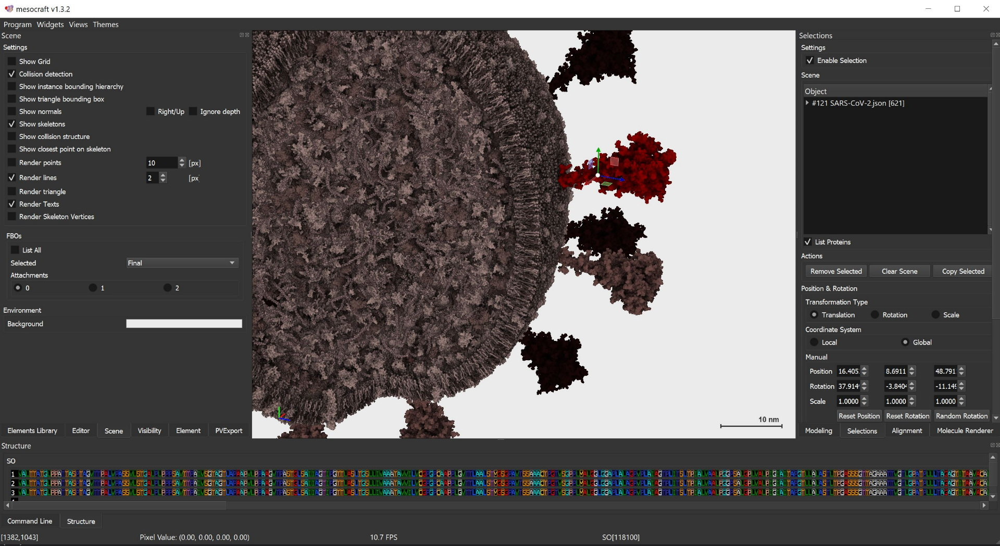

MesoScale Modeling
MesoCraft
MesoCraft: Procedural modeling of mesoscale structures
We present MesoCraft, a mesoscale modeling application for manual, procedural and rule-based modeling of mesoscale molecular models.

We present MesoCraft, a mesoscale modeling application for manual, procedural and rule-based modeling of mesoscale molecular models.
The latest version of the SARS-CoV-2 viral particle. This atomistic model was created using the MesoCraft tool, based on the available scientific literature about the virus.

The latest version of the T4 bacteriophage viral particle. This atomistic model was created using the MesoCraft tool, based on the available scientific literature about the virus.
Atomistic model of a chloroplast with all the proteins in the outer and inner membranes involved in the precursor protein import channel. This model also includes a model of a thylakoid.